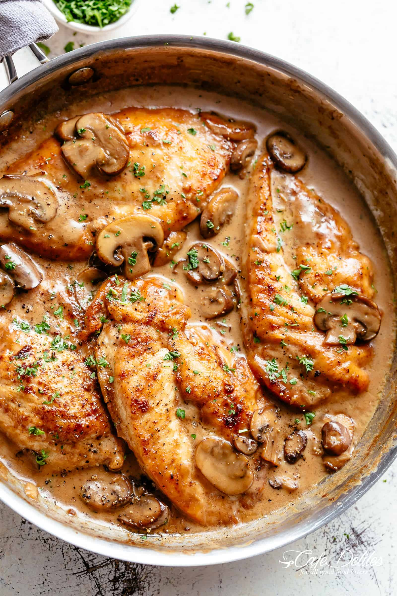

Chicken Marsala

Italian-American dish
mama mia!
Ingredients Needed
- 1 1/4 lbs chicken breast, (2 large), or chicken tenders
- 1/2 tsp salt , or to taste
- 1/4 tsp black pepper, or to taste
- 1/4 cup all-purpose flour, for dredging
- 2 Tbsp olive oil
- 1 Tbsp unsalted butter
- 8 oz brown button mushrooms, halved or thickly sliced if very large
- 1/2 tsp onion powder
- 2 garlic cloves, minced
- 3/4 cup dry marsala wine
- 3/4 cup chicken stock, reduced-sodium
- 1/2 cup heavy whipping cream
- 2 Tbsp parsley, finely chopped
- Cut chicken breasts in half lengthwise to make 4 even cutlets. Place between plastic wrap and pound until 1/3" thick. Season chicken all over with 1/2 tsp salt and 1/4 tsp pepper, dredge in flour (shaking off the excess) and then set aside.
- Heat a large heavy-bottomed pan over medium heat. Add 2 Tbsp olive oil and 1 Tbsp butter. Once butter and oil are hot, add dredged chicken and saute until golden and cooked through; about 3-4 minutes per side (don't over-cook). Set chicken aside and tent with foil to keep warm.
- Add more oil to the pan if needed along with mushrooms and saute until excess liquid from mushrooms evaporates and mushrooms are golden brown (5 min). Stir in 1/2 tsp onion powder and 2 minced garlic cloves and saute another 30 seconds or until fragrant.
- Add 3/4 cup marsala wine, scraping the bottom of the pan. Increase the heat and cook until mostly reduced down (4-5 min) then add 3/4 cup chicken stock and while stirring add 1/2 cup heavy cream in a steady stream. Lower the heat to keep at a simmer and continue to simmer and reduce sauce another 4-5 minutes until slightly thickened. Season sauce with 1/4 tsp salt or season to taste.
- Return chicken to pan and sprinkle the tops with 2 Tbsp chopped parsley. Spoon the sauce over the chicken and keep on the heat until heated through and the sauce has thickened to your desired consistency (2 minutes). Keep in mind, the sauce will thicken more as it cools.